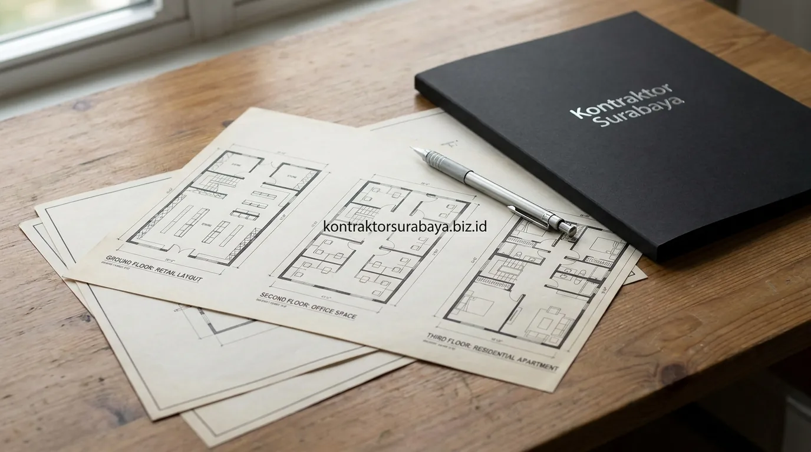

Perkembangan pesat sektor bisnis dan perdagangan di berbagai koridor komersial Surabaya—seperti kawasan Rungkut Industri, Merr, HR Muhammad, hingga Wiyung—mendorong tingginya permintaan terhadap bangunan rumah toko (ruko) bertingkat. Membangun ruko 3 lantai minimalis modern menjadi investasi bernilai tinggi karena mampu memadukan fungsi display usaha komersial, operasional kantor/gudang, serta ruang hunian keluarga yang nyaman dalam satu tapak lahan.
1. Fungsi Tiap Lantai pada Ruko 3 Lantai yang Efisien
Lantai dasar pada ruko 3 lantai umumnya difungsikan sebagai area usaha dengan akses langsung ke jalan, lantai dua untuk kantor administrasi atau gudang, dan lantai tiga sebagai hunian pemilik.
Pembagian zonasi fungsi secara vertikal ini membantu memisahkan aktivitas komersial yang sibuk dari ruang privat keluarga. Lantai 1 dimaksimalkan untuk etalase produk, kasir, atau showroom ritel yang langsung menyapa pelanggan, lantai 2 sebagai area kerja staf dan penyimpanan inventaris, sedangkan lantai 3 didesain layaknya apartemen privat lengkap dengan kamar tidur, dapur bersih, dan ruang keluarga.

2. Material dan Struktur yang Mendukung Bangunan 3 Lantai
Kolom struktur dengan dimensi lebih besar, plat lantai beton bertulang, tangga dengan struktur independen, dan pondasi yang diperhitungkan untuk beban bertingkat adalah empat elemen struktur utama pada ruko 3 lantai.
- Kolom Struktur Bertulang: Dirancang dengan dimensi pembesian ekstra tebal guna menahan beban dinamis aktivitas bisnis dan peralatan inventaris berat di lantai atas.
- Plat Lantai Beton Bertulang: Menggunakan bondek atau bekisting konvensional dengan mutu beton minimal K-250 untuk memastikan ketahanan lantai terhadap getaran dan beban barang.
- Tangga Struktur Independen: Struktur tangga cor beton diletakkan secara terpisah agar mempermudah alur mobilitas tanpa membebani dinding partisi.
- Pondasi Dalam Terhitung: Penggunaan pondasi tiang pancang mini (strauss pile/bored pile) menjamin stabilitas bangunan bertingkat di atas struktur tanah Surabaya.
3. Sirkulasi Akses Terpisah antara Area Usaha dan Hunian
Tangga atau pintu akses terpisah antara area usaha di lantai bawah dan hunian di lantai atas menjaga privasi penghuni tetap terjaga meski berada dalam satu bangunan.
Pemisahan akses samping (side entrance) dengan pintu berakses kartu kunci atau smart lock memungkinkan penghuni dan tamu keluarga masuk langsung menuju lantai 3 tanpa perlu melintasi keramaian toko di lantai dasar. Hal ini memberikan rasa aman optimal, terutama saat toko sudah tutup namun anggota keluarga masih beraktivitas.
"Ruko 3 lantai yang ideal bukan hanya menguntungkan dari sisi komersial, tetapi juga harus mampu memberikan kenyamanan istirahat dan privasi yang setara dengan rumah tapak mandiri."
4. Bagaimana Menentukan Lebar Fasad Ruko agar Menarik Perhatian Pelanggan?
Lebar fasad yang proporsional dengan lebar kavling, dipadukan signage yang jelas terlihat dari jalan, membantu ruko lebih mudah dikenali oleh calon pelanggan yang melintas.
Fasad ruko modern umumnya menggunakan material curtain wall kaca tempered berbingkai aluminium hitam elegan pada lantai 1 dan 2. Bukaan kaca lebar ini mengubah interior lantai dasar menjadi etalase visual raksasa yang memikat pandangan pengendara dari jalan raya utama, meningkatkan daya tarik walk-in customer secara instan.
5. Sistem Parkir dan Loading Dock untuk Ruko di Kawasan Bisnis
Area parkir depan, akses bongkar muat terpisah, jalur pejalan kaki, dan rambu petunjuk usaha adalah empat elemen yang mendukung operasional ruko di kawasan bisnis padat.
- Area Parkir Luwes: Lebar sempadan depan dimaksimalkan untuk parkir 2 hingga 3 mobil pelanggan tanpa mengganggu trotoar umum.
- Akses Bongkar Muat (Loading Dock): Jalur pintu samping atau rolling door khusus mempermudah distribusi barang masuk tanpa menghalangi alur pengunjung utama.
- Jalur Pedestrian Aman: Paving blok ramah pejalan kaki memberi kenyamanan bagi pengunjung yang datang dari halte atau gedung sekitar.
- Signage Usaha Eye-Catching: Papan nama reklame LED ditempatkan pada posisi strategis di bagian atas fasad agar terbaca jelas dari kedua arah jalan.
6. Kesalahan Umum dalam Membangun Ruko Bertingkat
Mengabaikan perhitungan beban struktur, tidak memisahkan akses usaha dan hunian, sirkulasi udara yang minim, dan kurangnya perencanaan parkir adalah empat kesalahan yang paling sering ditemukan pada proyek ruko bertingkat.
- Struktur Tidak Dihitung Beban Gudang: Memakai hitungan beban rumah tinggal biasa untuk ruko berisiko menyebabkan pelat dak lantai melendut atau retak saat ditumpuk stok barang berat.
- Akses Tangga Tercampur: Mengganggu privasi keluarga dan membuka celah keamanan dari orang luar yang lalu-lalang di lantai bawah.
- Ruko Terlalu Pengap: Menghilangkan bukaan ventilasi samping pada ruko gandeng tanpa menyediakan sumur void udara di bagian belakang.
- Lahan Parkir Terlalu Sempit: Membuat calon pelanggan enggan mampir karena kesulitan mencari tempat parkir kendaraan.
Setiap proyek ruko memiliki kebutuhan fungsi dan skala usaha yang berbeda, sehingga pembagian lantai dan struktur perlu disesuaikan melalui konsultasi dan survei lahan langsung. Lihat dokumentasi proyek ruko lainnya pada galeri proyek kami, atau pelajari cakupan layanan pada halaman jasa kontraktor bangunan Surabaya.